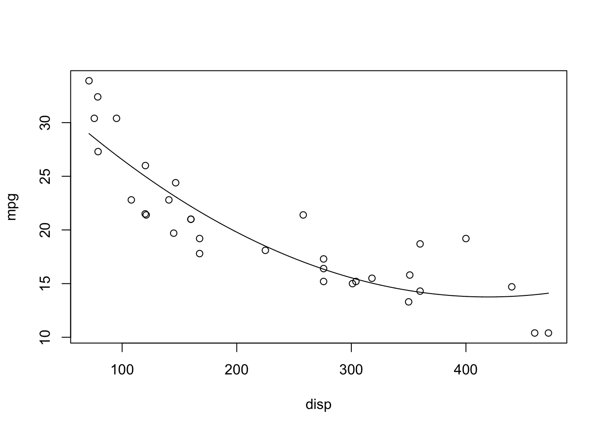
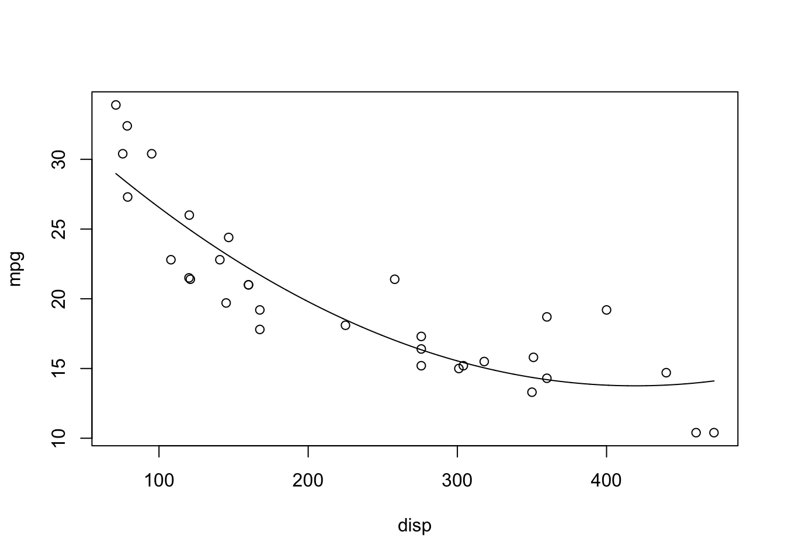
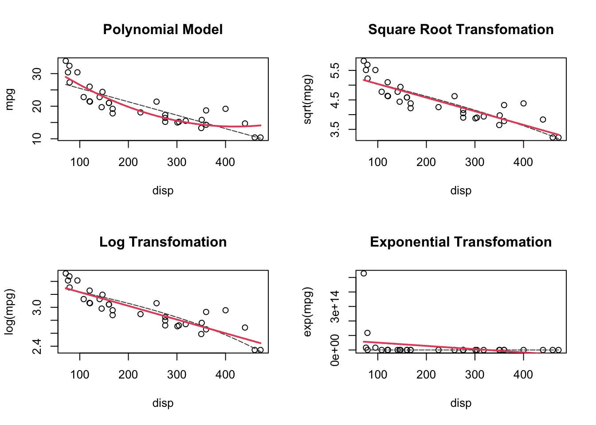
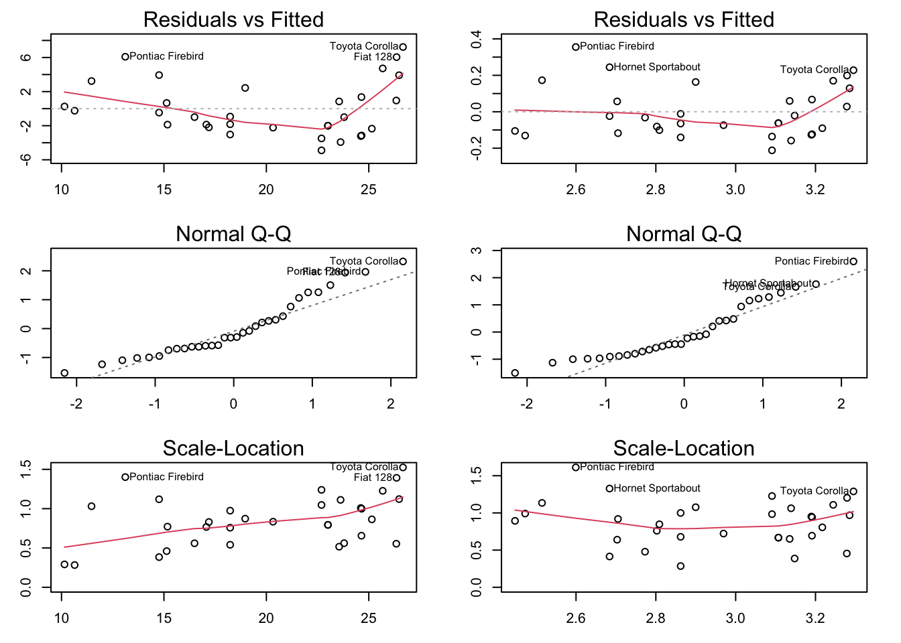
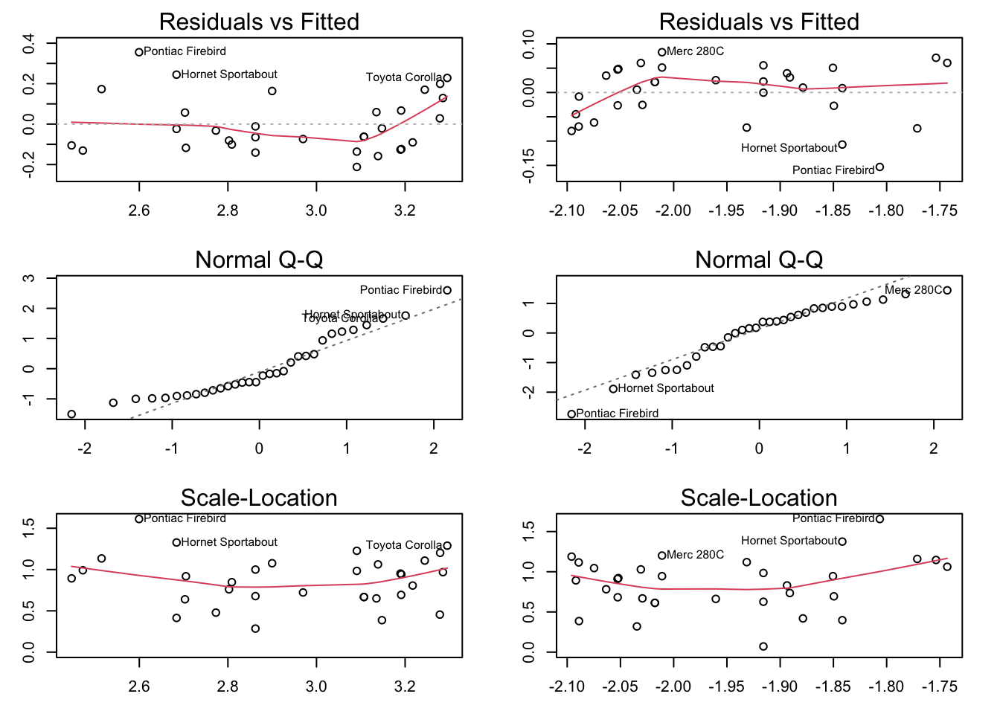

Show the code
plot(mpg ~ disp, data = mtcars)
mpg ~ dispFirst, let’s consider the polynomial models from previous lecture:
plot(mpg ~ disp, data = mtcars)
A reasonable model for this looks to be \(mpg_i = \beta_0 + \beta_1disp_i + \beta_{11}disp_i^2\):
plot(mpg ~ disp, data = mtcars)
disp_seq <- seq(min(mtcars$disp), max(mtcars$disp), 0.1)
poly_seq <- lm(mpg ~ poly(disp, 2), data = mtcars) |>
predict(newdata = list(disp = disp_seq))
lines(disp_seq, poly_seq)
It fits! However, the point of the polynomial lecture was that polynomials are tempting, but must be justified by theory. I’m not sure it’s reasonable to assume that the fuel efficiency is proportional to the square of the displacement.
Maybe a transformation will help?
Let’s try the two main transformations we talked about in class.
par(mfrow = c(2,2))
disp_seq <- seq(min(mtcars$disp), max(mtcars$disp), 0.1)
lm_seq <- lm(mpg ~ disp, data = mtcars) |>
predict(newdata = list(disp = disp_seq))
plot(mpg ~ disp, data = mtcars,
main = "Polynomial Model")
poly_seq <- lm(mpg ~ poly(disp, 2), data = mtcars) |>
predict(newdata = list(disp = disp_seq))
lines(disp_seq, lm_seq, col = "#4a4a4a", lty = 2)
lines(disp_seq, poly_seq, col = 2, lwd = 2)
plot(sqrt(mpg) ~ disp, data = mtcars,
main = "Square Root Transfomation")
sqrt_seq <- lm(sqrt(mpg) ~ disp, data = mtcars) |>
predict(newdata = list(disp = disp_seq))
lines(disp_seq, sqrt(lm_seq), col = "#4a4a4a", lty = 2)
lines(disp_seq, sqrt_seq, col = 2, lwd = 2)
plot(log(mpg) ~ disp, data = mtcars,
main = "Log Transfomation")
log_seq <- lm(log(mpg) ~ disp, data = mtcars) |>
predict(newdata = list(disp = disp_seq))
lines(disp_seq, log(lm_seq), col = "#4a4a4a", lty = 2)
lines(disp_seq, log_seq, col = 2, lwd = 2)
plot(exp(mpg) ~ disp, data = mtcars,
main = "Exponential Transfomation")
exp_seq <- lm(exp(mpg) ~ disp, data = mtcars) |>
predict(newdata = list(disp = disp_seq))
lines(disp_seq, exp(lm_seq), col = "#4a4a4a", lty = 2)
lines(disp_seq, exp_seq, col = 2, lwd = 2)
I also added the linear model, transformed to the scale of the data. Notice how the linear model is curved on these non-linear scales!
In the end, the log-transform is actually pretty good! Let’s evaluate that one!
I’m going to add log_mpg as a column in mtcars because we’re only going to be working on that scale. With transformations, all of our assumptions about the residuals are on the transformed scale!!! This is important!!!
mtcars$log_mpg <- log(mtcars$mpg)
log_lm <- lm(log_mpg ~ disp, data = mtcars)
raw_lm <- lm(mpg ~ disp, data = mtcars)
par(mfrow = c(3,2), mar = c(3,3,2,2))
plot(raw_lm, which = 1)
plot(log_lm, which = 1)
plot(raw_lm, which = 2)
plot(log_lm, which = 2)
plot(raw_lm, which = 3)
plot(log_lm, which = 3)
log_lm!log_lm!It’s worth noting that we always use “fitted” rather than, say, disp. When using a polynomial model, the fitted values go from the lowest to highest. For a positive coefficient for disp^2, this means that it starts from the lowest point in the parabola and goes upward in both directions! Keep that in mind when interpreting residual plots of polynomial functions!
library(MASS)
boxcox(lm(mtcars$mpg ~ mtcars$disp), data = mtcars)
Since 0 is the the top 5% of log-Likelihood values, the log transform is reasonable according to Box-Cox!
bc <- boxcox(lm(mtcars$mpg ~ mtcars$disp), data = mtcars, plotit = FALSE)
print(bc)$x
[1] -2.0 -1.9 -1.8 -1.7 -1.6 -1.5 -1.4 -1.3 -1.2 -1.1 -1.0 -0.9 -0.8 -0.7 -0.6
[16] -0.5 -0.4 -0.3 -0.2 -0.1 0.0 0.1 0.2 0.3 0.4 0.5 0.6 0.7 0.8 0.9
[31] 1.0 1.1 1.2 1.3 1.4 1.5 1.6 1.7 1.8 1.9 2.0
$y
[1] -3.57059866 -2.41311198 -1.29583952 -0.22262913 0.80247262 1.77526399
[7] 2.69144571 3.54669319 4.33674248 5.05748822 5.70509010 6.27608329
[13] 6.76748690 7.17690379 7.50260505 7.74359272 7.89963620 7.97127900
[19] 7.95981574 7.86724092 7.69617369 7.44976444 7.13158953 6.74554135
[25] 6.29571958 5.78632931 5.22158959 4.60565519 3.94255266 3.23613075
[31] 2.49002447 1.70763143 0.89209868 0.04631829 -0.82707014 -1.72567168
[37] -2.64732452 -3.59008589 -4.55221639 -5.53216368 -6.52854602print(paste0("Optimal value of lamba is: ", bc$x[which.max(bc$y)]))[1] "Optimal value of lamba is: -0.3"mtcars$opt_mpg <- (mtcars$mpg^(-0.3) - 1)/0.3
optimal_lm <- lm(opt_mpg ~ disp, data = mtcars)
raw_lm <- lm(mpg ~ disp, data = mtcars)
par(mfrow = c(3,2), mar = c(3,3,2,2))
plot(log_lm, which = 1)
plot(optimal_lm, which = 1)
plot(log_lm, which = 2)
plot(optimal_lm, which = 2)
plot(log_lm, which = 3)
plot(optimal_lm, which = 3)
It does look a little bit better, but the log is simpler to interpret and should probably be used.